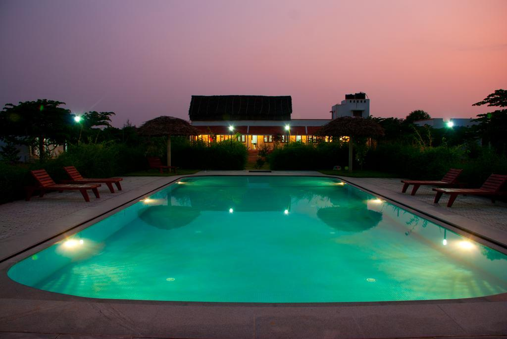

The Mountain Retreat is a peaceful getaway spot near Tiruvannamalai, located close to the sacred Arunachala Hills. It offers a calm and serene environment for visitors who wish to relax, meditate, and enjoy nature away from the busy town. With scenic views, natural surroundings, and comfortable stay options, it is popular among tourists and spiritual seekers.
The Mountain Retreat is located near the 179B road 📍 View on Google Maps